地政学
ニューオーリンズはミシシッピ川流域とメキシコ湾をつなぐ河口の要衝で、穀物、石油、化学品、軍事、移民の歴史が重なります。内陸アメリカの生産物を外海へ出す結節点で、、湿地と堤防に守られた脆い港湾都市です。

🇺🇸 アメリカ合衆国 / 北米 / World City Atlas
ミシシッピ川河口の港湾都市です。ジャズ、クレオール文化、カーニバル、観光の華やかさと、湿地喪失、洪水、住宅格差、災害の記憶が同じ街路に重なります。
都市の骨格
ニューオーリンズは、ミシシッピ川の曲流、メキシコ湾への航路、低地の住宅地、観光地区、黒人文化、カトリック儀礼、災害復興が互いにほどけない都市です。
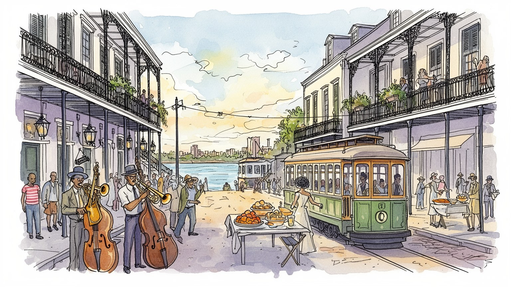
ニューオーリンズはミシシッピ川流域とメキシコ湾をつなぐ河口の要衝で、穀物、石油、化学品、軍事、移民の歴史が重なります。内陸アメリカの生産物を外海へ出す結節点で、、湿地と堤防に守られた脆い港湾都市です。
港湾物流、観光、音楽、飲食、医療、大学、石油ガス関連、建設が雇用を作ります。華やかな通りの背後では、港湾作業、清掃、厨房、ホテル、配達、復旧工事、介護が都市を支えます。賃金と住居の差も大きな課題です。
ジャズ、セカンドライン、マルディグラ、クレオール料理、カトリック、ヴードゥー、黒人教会が街の暦を作ります。祝祭は観光商品である前に、共同体の記憶、喪、誇りを路上へ出す文化実践です。音楽も信仰も続きます。
来訪者はフレンチクォーター、ライブ音楽、食、市場、川辺を楽しみますが、住民には洪水保険、家賃、老朽住宅、公共交通、学校、犯罪、暑さが日常条件です。観光の成功は生活の基盤でも測られます。市場も支えます。
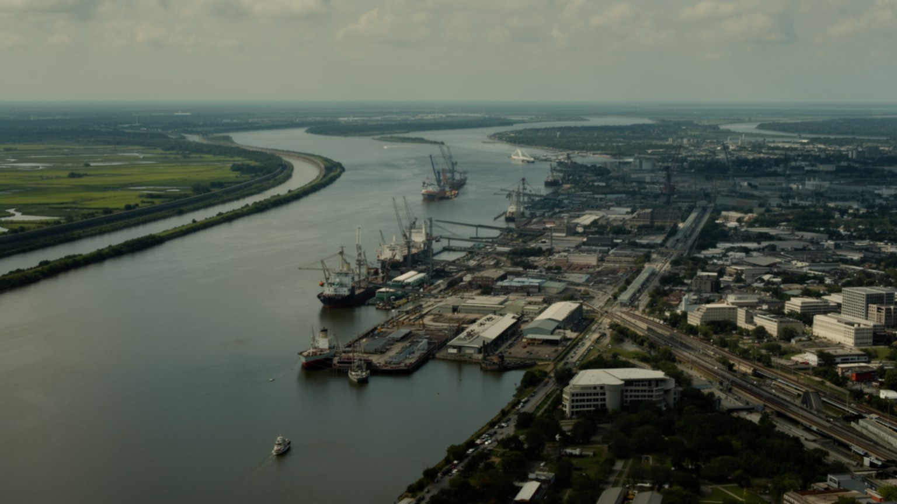
ニューオーリンズを読む入口は、ミシシッピ川の大きな曲がりです。都市は川の自然堤防の上に生まれ、背後に低湿地と湖を抱え、海へ向かう船と内陸から下る貨物を受け止めてきました。地図では市街地が平面に見えますが、実際にはわずかな高低差が安全、所得、住宅、保険、記憶を分けるのです。古いフレンチクォーターやガーデンディストリクトは比較的高い土地にあり、運河や排水ポンプの発達で低地の住宅地が広がったのです。川は交易と観光の背景であると同時に、堤防で押さえなければならない力でもあります。ミシシッピ川流域の穀物、石油化学品、鋼材、コンテナはここを通って世界市場へ出るが、その動線は住民の目には見えにくいです。水辺の美しさだけを見れば、都市の脆さを読み落とすのです。ニューオーリンズの地理は、川が富を運び、同時に洪水への恐れを残す構造そのものです。河岸を歩くと、観光船、倉庫、鉄道、橋、堤防、古い町並みが近距離で並びます。この近さが、港町としての強さと低地都市としての危うさを同時に示しています。さらに、湖ポンチャートレインや周辺の運河は、都市を内陸のようにも島のようにも感じさせるのです。水に囲まれる感覚は風景の魅力である一方、避難路、橋、ポンプ、停電時の排水を日常的な条件に変えます。地形は住民の不安と誇りを同時に作る基盤です。だから街の地図は水の地図でもあります。
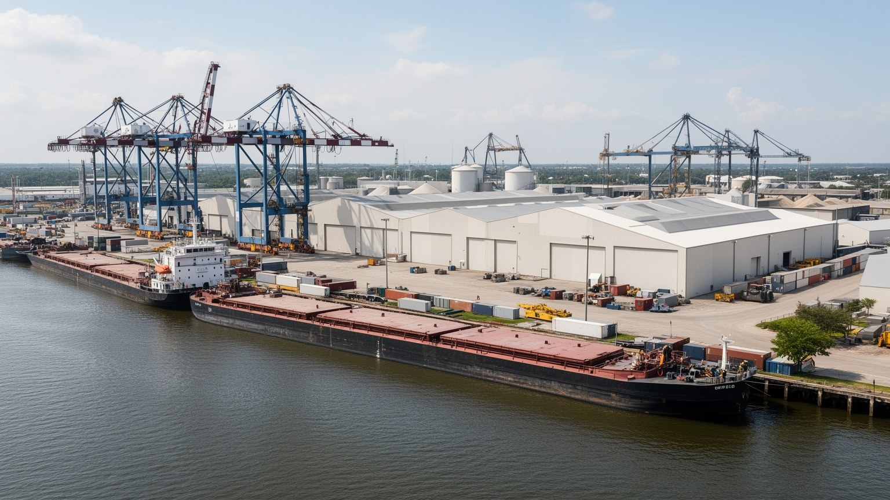
ニューオーリンズの港は、観光地の背後でアメリカ内陸と世界を結ぶ実務の装置として動きます。ミシシッピ川は中西部の農業地帯、工業地帯、石油化学コンビナートを南へ引き寄せ、穀物、石油製品、化学品、鉄鋼、コーヒー、冷凍貨物、コンテナを湾岸から外へ出します。港湾は単独で存在せず、鉄道、バージ、トラック、倉庫、税関、保険、船舶修理、労働組合、警備と結びつきます。観光客がバーボンストリートで音楽を聴く間にも、川沿いでは積み替え、検査、操船、清掃、夜勤が続きます。港は高賃金の専門職を生む一方、危険な現場労働や景気変動に左右される仕事も多いです。河口に近い利点は、ハリケーン、高潮、塩水遡上、湿地喪失によるリスクと表裏一体です。物流の効率を上げるほど、大型船、道路交通、環境負荷、周辺地区の騒音も増えます。ニューオーリンズを文化都市としてだけ見ると、この港湾の重みが隠れます。都市の国際性は、音楽や料理だけでなく、見えにくい貨物の流れにも支えられています。港は市財政や雇用に利益をもたらすが、近隣の大気汚染、道路の振動、産業用地と住宅地の境界も作ります。物流を読むことは、便利な消費の背後にある労働、環境、地域負担の配分を読むことでもあります。さらに港の競争力は、川の浚渫、橋の高さ、鉄道接続、倉庫用地、労働者の技能に左右されます。港は水辺の風景ではなく、都市全体を動かす産業基盤です。
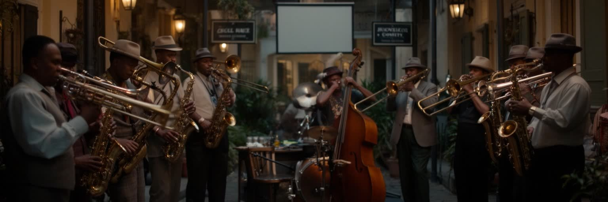
ニューオーリンズはジャズの故郷として語られますが、その音楽は博物館の中で生まれたわけではありません。港、歓楽街、黒人教会、葬列、カーニバル、ダンスホール、酒場、学校のバンド、家族の集まりが交わり、アフリカ系、カリブ系、フランス系、スペイン系、アメリカ南部の音が路上で混ざったのです。ブラスバンドの行進、セカンドライン、即興、コールアンドレスポンスは、都市の身体的な記憶です。観光客はクラブで演奏を楽しみますが、音楽家にとって街は仕事場であり、家賃、ギグの報酬、チップ、録音、教育、楽器の維持、夜間の安全が生活条件になります。ジャズは自由な表現として消費されやすい一方、黒人コミュニティの歴史、差別、貧困、葬送、祝祭を背負っています。フレンチメンストリートやトレメの演奏を聴くとき、音楽は観光商品である前に、都市が悲しみと誇りを公共空間へ出す方法だと分かります。ニューオーリンズの文化政策は、音楽を宣伝するだけでなく、演奏者が住み続け、若い世代が学び、地域の場が失われないよう支える必要があります。学校の吹奏楽、地域の練習場、ラジオ局、小さなクラブ、路上での演奏許可は、次の世代の入口になります。音が街に残るかどうかは、才能だけでなく、住宅、教育、交通、夜の仕事を支える制度に左右されます。音楽は観光の記念品ではなく、地域が自分を語る言語です。
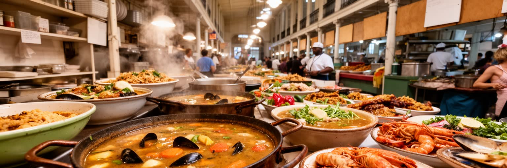
ニューオーリンズの食は、都市の歴史をもっとも身近に味わえる入口です。ガンボ、ジャンバラヤ、エトゥフェ、屋台のスノーボール、ポーボーイ、ベニエ、牡蠣、ザリガニ、赤豆と米は、フランス、スペイン、西アフリカ、カリブ、アカディア系ケイジャン、先住民、南部農村、港湾労働の記憶を混ぜています。クレオール料理は都市的で多層的な家庭とレストランの文化を示し、ケイジャンの味は湿地、狩猟、漁労、移住の歴史を背負います。観光客にとって料理は名物ですが、住民にとっては家族、教会、学校、葬儀、祝祭、仕事帰りの食事、フレンチマーケットの買い物に結びつく日常です。厨房では仕込み、皿洗い、配膳、魚介の仕入れ、冷蔵、清掃、低賃金労働が続き、人気店の明るさは多くの見えない作業で支えられます。気候変動や湿地の喪失は、エビ、牡蠣、カニ、ザリガニなどの供給にも影響します。食文化を守るとは、レシピを残すだけでなく、漁業、移民労働、家賃、学校での食の記憶、地域の小さな店を守ることでもあります。ニューオーリンズの皿には、港町の交流と社会の不平等が同時に盛られています。家庭ごとの味つけや店の仕込みは、観光パンフレットに載る名物より細かく地域を語ります。誰が料理を教え、誰が材料を買い、誰が食卓へ座れるのかを見ると、食は都市の家族史と労働史に変わります。食べることは、この街で記憶を分け合う行為でもあります。
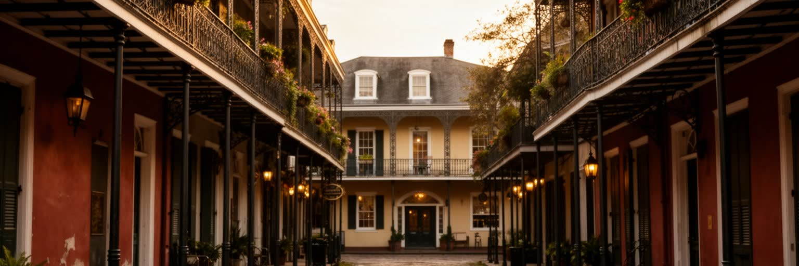
フレンチクォーターはニューオーリンズの象徴ですが、単なる古い街並みではありません。格子状の街路、鉄製バルコニー、中庭、カトリック教会、広場、音楽の店、バー、ホテル、土産物店が密集し、植民地時代から火災、再建、移民、歓楽街化、保存運動、観光産業を通じて形を変えてきました。建物はフランス風という言葉だけでは説明できず、スペイン統治期の建築規制、カリブ海との交流、アメリカ化、商業化が重なります。地区の美しさは保存制度と観光収入で支えられる一方、住民の生活、騒音、短期賃貸、夜間経済、清掃、警備、洪水対策に大きな負荷をかけるのです。ジャクソンスクエアやロイヤルストリートを歩くと、歴史は整えられた舞台のように見えますが、その裏には厨房、搬入、廃棄物、家賃、労働者の通勤があります。観光のために過去を演出しすぎれば、街は生きた歴史地区ではなく消費空間になります。フレンチクォーターを読むには、写真に残るバルコニーだけでなく、誰が住み、誰が働き、誰が夜の騒音と修繕費を引き受けているかを見る必要があります。保存された街並みは、過去と現在の利害がぶつかる現場でもあります。古い建物は湿気、白蟻、嵐、火災に弱く、維持には専門職と資金が欠かせません。美しさを守る作業そのものが、都市の産業であり、住民と観光客の関係を調整する公共的な仕事になっています。日々の修繕も歴史保存の一部です。
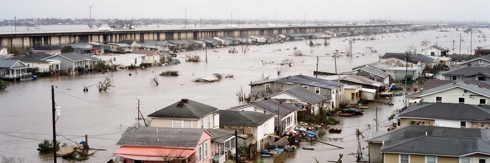
二〇〇五年のハリケーン・カトリーナは、ニューオーリンズの都市史を決定的に変えました。破壊は単に強い嵐が来た結果ではなく、堤防の破損、低地の開発、避難手段の不足、貧困、車を持たない住民、行政対応の遅れ、人種格差が重なって起きました。ロウワー・ナインス・ワードなどの地区では家屋が流され、家族とコミュニティが離散し、戻れない人も多かったのです。復興は建物を直す作業であると同時に、誰が都市に戻る権利を持つのかを問う政治でした。新しい堤防、ポンプ、学校制度、住宅再建、観光回復は都市を前へ進めたが、災害前の不平等がそのまま解消されたわけではありません。カトリーナの記憶は、追悼碑や博物館だけでなく、空き地、建て替えられた家、上昇した保険料、離れて暮らす親族、毎年の避難準備に残ります。ニューオーリンズを訪れるなら、復興した明るい街だけでなく、水がどの地区を襲い、誰が助けを待ち、誰が帰れなかったのかを考える必要があります。災害の記憶は過去の悲劇ではなく、次の嵐に備えるための都市の倫理です。学校、教会、家族の語り、地域の壁画は、公式記録とは別の記憶を保ちます。災害を忘れないことは、恐怖を固定することではなく、避難できない人を作らない制度を更新し続けることです。復興した観光地区の明るさと、戻れなかった家族の沈黙を同時に見る姿勢が必要です。
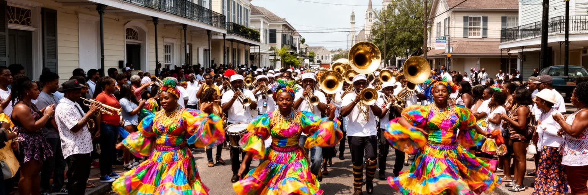
ニューオーリンズの黒人史は、奴隷貿易、自由黒人コミュニティ、クレオール社会、教会、学校、音楽、労働運動、隔離政策、警察、住宅差別、災害復興を通じて都市の核心を作ってきました。コンゴスクエアは、アフリカ系住民が音と踊りを保った場所として語られ、トレメはアメリカで最も古い黒人居住地区の一つとして文化の厚みを持ちます。セカンドライン、マルディグラ・インディアン、ソーシャル・エイド・アンド・プレジャー・クラブ、葬列、教会の礼拝、マルディグラ・インディアンの衣装は、祝祭であると同時に、共同体が互いを支え、喪を表し、誇りを可視化する仕組みです。観光はこれらを華やかに見せるが、背後には差別、貧困、立ち退き、暴力、教育格差への長い抵抗があります。黒人文化を都市ブランドとして使うだけでは、その歴史を尊重したことになりません。演奏者、縫い手、教会、クラブ、地域の長老、若者が生活できる住宅と仕事があって初めて、儀礼は続きます。ニューオーリンズの路上文化は、楽しさだけでなく、失われた人を記憶し、生き延びた人を励ます公共の言葉でもあります。衣装を縫う長い時間、楽器を学ぶ子ども、葬列を見送る近所の人々は、統計に出にくい都市の基盤です。儀礼は街を飾るイベントではなく、共同体が自分たちの歴史を消されないよう更新する方法です。ここに都市の尊厳があります。記憶は路上で継がれるのです。
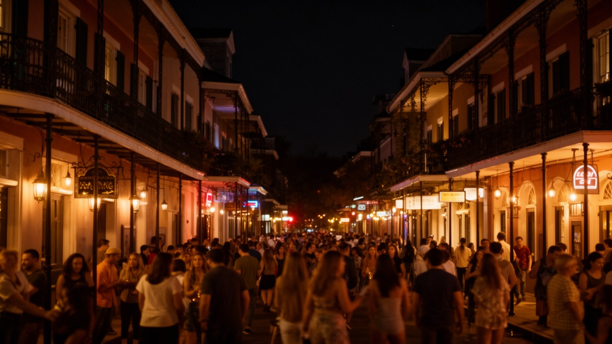
ニューオーリンズの観光は昼の歴史散策だけでなく、夜の音楽、バー、食事、祭り、路上のにぎわいに強く支えられます。バーボンストリート、フレンチメンストリート、球場、フェスティバル会場、ホテル、レストラン、クルーズ、カジノ、コンベンションは、都市の収入と雇用を生みます。夜間経済はミュージシャン、バーテンダー、料理人、屋台売り、警備員、清掃員、タクシー運転手、ホテル従業員、救急対応、音響技術者の仕事を作る一方、低賃金、チップ依存、不規則な勤務、酔客への対応、騒音、治安、住民の睡眠をめぐる問題も生みます。観光客は自由で開放的な街を期待するが、その自由を保つには規制、清掃、交通、警備、医療、トイレ、廃棄物処理が必要です。夜の華やかさが一部地区に集中すると、家賃は上がり、住民向けの商店は減り、短期滞在が生活空間を押し出すのです。ニューオーリンズの課題は、観光を弱めることではなく、楽しさを支える人の労働と住民の権利を同じくらい重く扱うことです。夜の都市は文化の舞台であると同時に、働く人の身体と近隣の生活を試す制度でもあります。祭りや試合の後の朝、道路を洗い、楽器を片付け、厨房を閉め、酔客の跡を整える仕事が始まります。観光の価値は、来訪者の記憶だけでなく、翌日も住民が街を使える状態に戻せるかで決まるのです。夜の楽しさは、朝の都市運営まで含めて成立します。
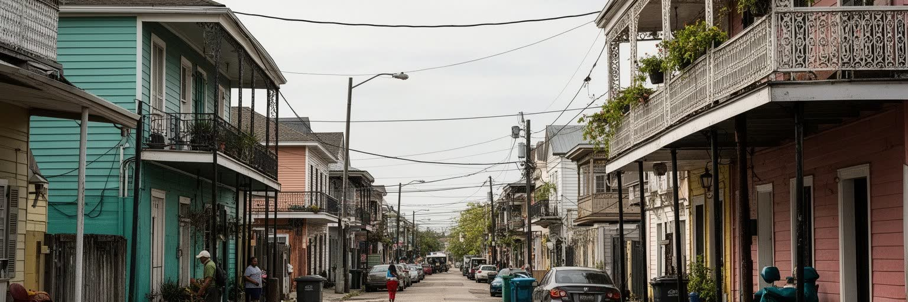
ニューオーリンズの住宅問題は、低地都市の地形、人種格差、観光化、災害リスクが絡み合っています。比較的高い土地や歴史的地区は人気が高く、家賃と不動産価格が上がりやすいです。低地の地区では洪水リスク、保険料、老朽住宅、修繕費が重く、災害後の再建資金や行政手続きにアクセスできるかで生活の差が広がります。カトリーナ後には、公営住宅の再編、学校改革、民間投資、短期賃貸の増加が進み、都市は見た目には復興しても、以前の住民が戻れない場所も生まれました。観光客向けの宿泊や飲食が増えるほど、サービス業で働く人が近くに住めなくなる矛盾が強まるのです。住宅は建物の問題だけではありません。バス路線、排水、病院、学校、食料品店、教会、親族、近所の助け合いと一体で生活を支えます。黒人住民や低所得者が長く築いた地域の文化は、地価上昇で簡単に失われるのです。ニューオーリンズの魅力を守るには、歴史的建築や観光地区だけでなく、普通の家、ポーチ、角の店、学校への道、葬列が通る路上を守る必要があります。都市の文化は、住み続けられる住宅があって初めて日常として続きます。洪水保険の負担や修繕の遅れは、所得の低い世帯ほど重くなります。住宅政策は防災政策であり、文化政策でもあります。家を失うことは、住所だけでなく、教会、親族、音楽、食、記憶の網を失うことだからです。住まいは文化の土台です。
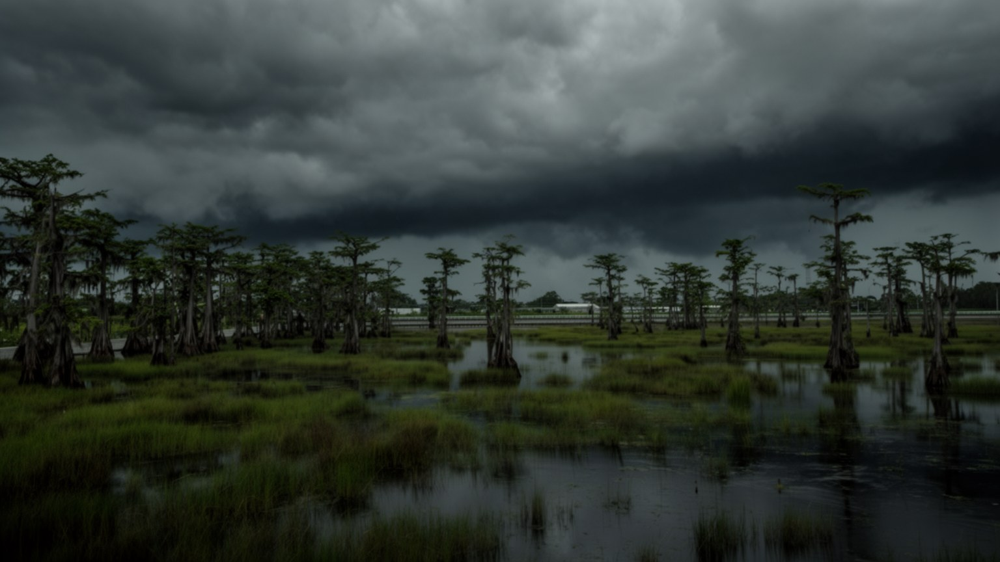
ニューオーリンズの気候リスクは、ハリケーンだけでは説明できません。海面上昇、高潮、強い降雨、地盤沈下、湿地の消失、塩水の遡上、暑熱が組み合わさり、都市の防御線を少しずつ弱めています。ルイジアナ沿岸の湿地は、嵐の力を吸収する緩衝地帯でしたが、運河開削、石油ガス開発、堤防による土砂供給の変化、海面上昇で失われてきました。湿地が減るほど、都市は堤防、ポンプ、排水路という硬いインフラへ依存します。これらは必要ですが、故障や想定を超える雨には限界があります。夏の暑さは屋外労働者、高齢者、低所得世帯、停電時の住民に重くのしかかるのです。気候適応は大規模工事だけでなく、避難計画、保険制度、住宅のかさ上げ、緑地、日陰、公共交通、近隣の連絡網を含む生活政策です。水と共に生きてきた都市ほど、水を完全に排除する発想だけでは持続しません。ニューオーリンズの未来は、湿地を回復し、低地に住む人を守り、次の災害で誰を置き去りにしないかを決める政治にかかっています。気候リスクは自然現象ではなく、土地利用と不平等を映す都市の鏡でもあります。湾岸のエネルギー産業に支えられてきた地域が、同時に気候変動の前線に立つ矛盾も大きいです。雇用、環境、治水を別々に扱えば、住民はまた危険な土地に取り残されます。適応は暮らしの再設計です。湿地の回復は都市の生存戦略でもあります。
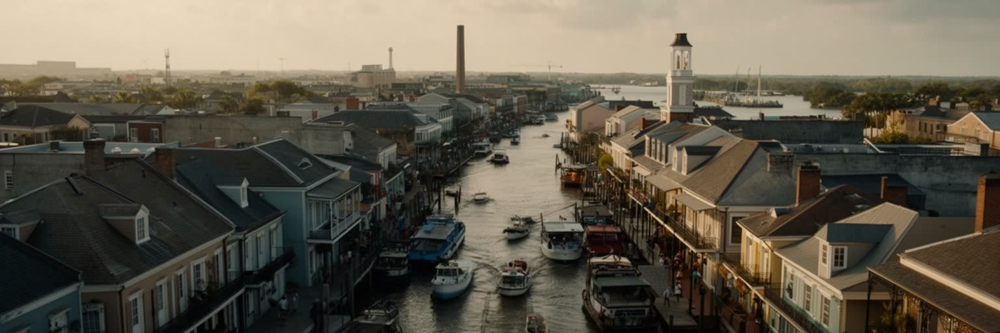
ニューオーリンズを一つの言葉で語るなら、祝祭の港町という表現が浮かぶのです。しかし実際の都市は、ミシシッピ川の地理、港湾物流、ジャズ、クレオールとケイジャンの食、フレンチクォーターの保存、カトリーナの記憶、黒人史、夜間観光、住宅格差、湿地の消失が互いに結びつく複雑な場所です。音楽と料理の明るさは、喪、差別、労働、移民、災害から切り離せません。観光客は自由で陽気な都市を体験するが、住民は家賃、保険、学校、交通、暑さ、次の嵐への備えの中で暮らします。ニューオーリンズの重要性は、経済規模だけでは測れません。内陸アメリカを海へ開く港であり、黒人文化とカリブ海的な交流をアメリカ都市の中心へ刻み、気候変動時代の低地都市が抱える課題を先に示しています。街を読むときは、楽しい場所を疑うのではなく、その楽しさを誰が支え、誰が危険を負い、どの記憶が観光の表面で薄められているかを見る必要があります。ニューオーリンズは、都市の魅力と脆さが同じ音楽、同じ水辺、同じ路上に現れる稀な都市です。その重なりを理解すると、祝祭は単なる娯楽ではなく、生き延びるための公共文化として見えてきます。だからこの都市を読む視点は、華やかさと傷跡を分けないことにあります。港、湿地、食卓、教会、クラブ、堤防、ポーチを一続きの都市として見ると、ニューオーリンズはアメリカ南部の例外ではなく、世界の低地都市が直面する未来を映す鏡になります。